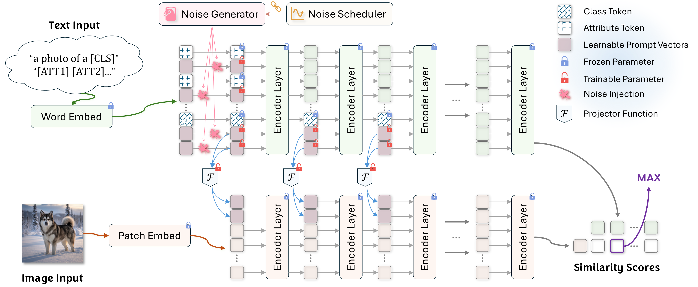

Overview
While Multimodal Prompt Learning (MPL) effectively adapts Vision-Language Models, optimizing a single static point representation can be limited by base-class overfitting and training instability. Furthermore, addressing this via external Large Language Models (LLMs) often introduces additional computational overhead and reliance on external priors.
To overcome these limitations endogenously, we propose Points-to-Clouds (P2C), a novel LLM-free framework that reframes prompt learning as a dynamic denoising task. P2C transitions from learning a deterministic point to a continuous semantic cloud via a dual denoising mechanism.

Key Contributions
1. Endogenous and LLM-Free
P2C fundamentally challenges the reliance on external explicit knowledge (e.g., querying LLMs for attribute generation). It learns a robust semantic region entirely from within, ensuring scalability and preventing hallucinations in specialized domains.
2. Dual Denoising Mechanism
We introduce a synergistic denoising approach. A Dynamic Prompt Denoising (DPD) module injects annealed GMM noise into text prompts. Simultaneously, an auxiliary consistency loss explicitly forces the V-L Mapper to reconstruct clean visual prompts from these perturbed inputs.
3. Structural Stabilizer
By smoothing the optimization landscape, P2C acts as an effective stabilizer. It significantly mitigates the initialization variance commonly observed in prompt learning and enables reliable convergence regardless of prompt capacity or random seeds.
Empirical Performance
Extensive experiments across 11 diverse datasets highlight the superiority of P2C. It achieves a state-of-the-art 79.7% harmonic mean on the challenging base-to-novel generalization benchmark, alongside excellent cross-dataset transferability.
Base-to-Novel Generalization (Average over 11 Datasets)
| Method | Base Accuracy | Novel Accuracy | Harmonic Mean (HM) |
|---|---|---|---|
| CoOp | 82.7 | 63.2 | 71.7 |
| CoCoOp | 80.5 | 71.7 | 75.8 |
| MaPLe | 82.3 | 75.1 | 78.6 |
| P2C (Ours) | 83.5 | 76.1 | 79.7 |
Core Implementation Preview
We provide a sneak peek into the core implementation of our Dual Denoising Mechanism.